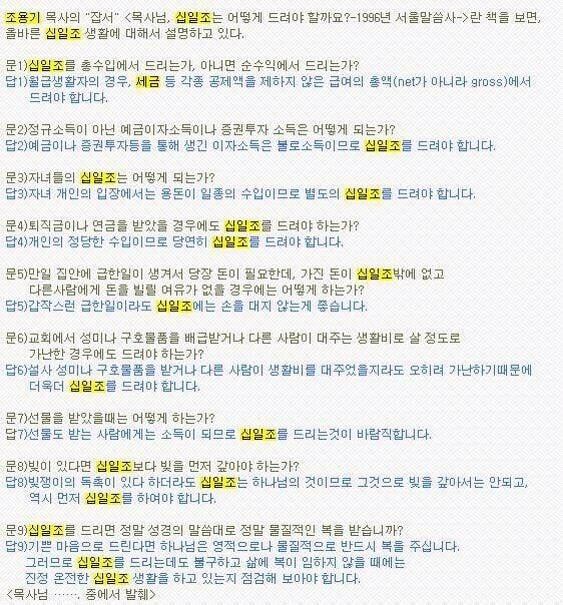

월급은 세전 기준입니다. 빚이 있어도 십일조를 먼저내시고 빚은 나중입니다.
선물, 용돈 받을 때도 물론 내셔야하고 구호품 받고 살아도 십일조는 우선입니다.
급한일이 있어도 십일조에는 손대면 안됩니다.
십일조를 내는데도 복이 안오면 빠트린 십일조가 있는지 점검해봅시다.
p.s
조용기목사라면 세계 최대 규모의 개신교 교회 여의도순복음교회의 초대목사로
여의도순복음교회는 이단이 아니고
한국 주요 정통 개신교 교단인 기독교대한하나님의성회(기하성) 소속의 정통 교회임
조용기는 이단 취급받다가 너무 세지니까 개독교단이 굴복해서 정통인정